이번에는 오키나와시 모로미자토에 있는 “오키나와 소바 cafe 사치조(崎門)”에 다녀왔습니다😊 2025.5에 먹으러 갔어요😄
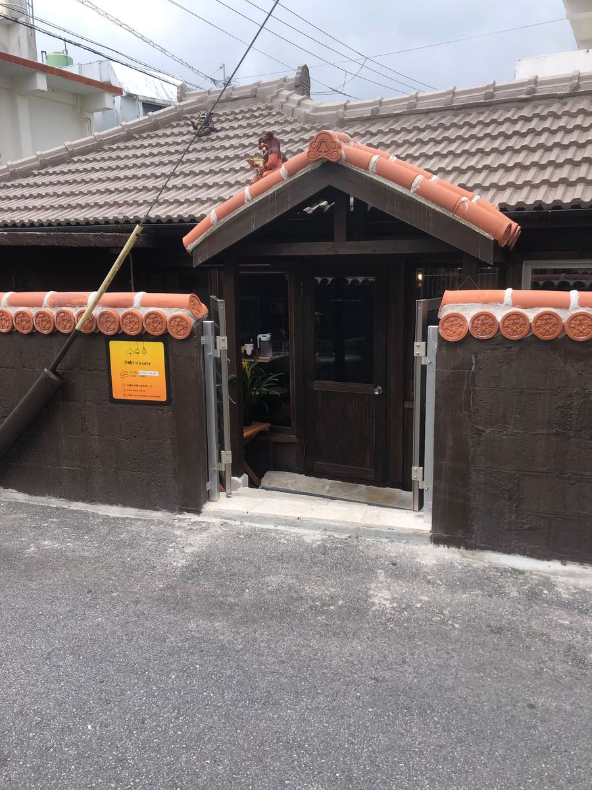
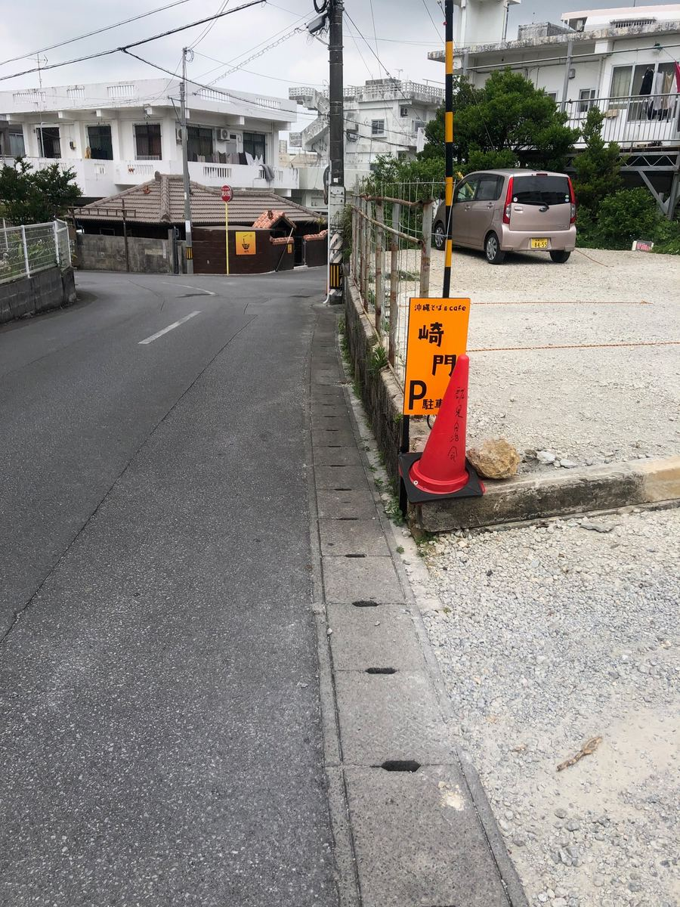
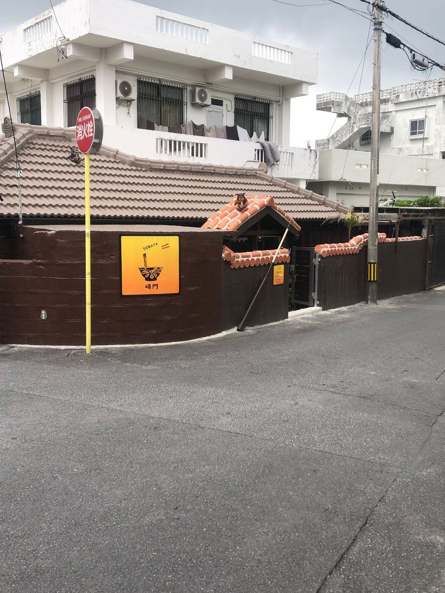
우선 외관부터 분위기가 좋아요~. 시멘트 기와 지붕의 고민가풍 건물로, 묵직한 모습입니다. 얼핏 보면 옛날 그대로의 오키나와 집 같은데, 간판에는 “오키나와 소바 cafe”라고 적혀 있어서 전통과 멋스러움이 공존하는 신기한 매력이 있어요✨ 2025년 2월에 막 오픈한 새 가게라고 해서 기대가 높아지네요.
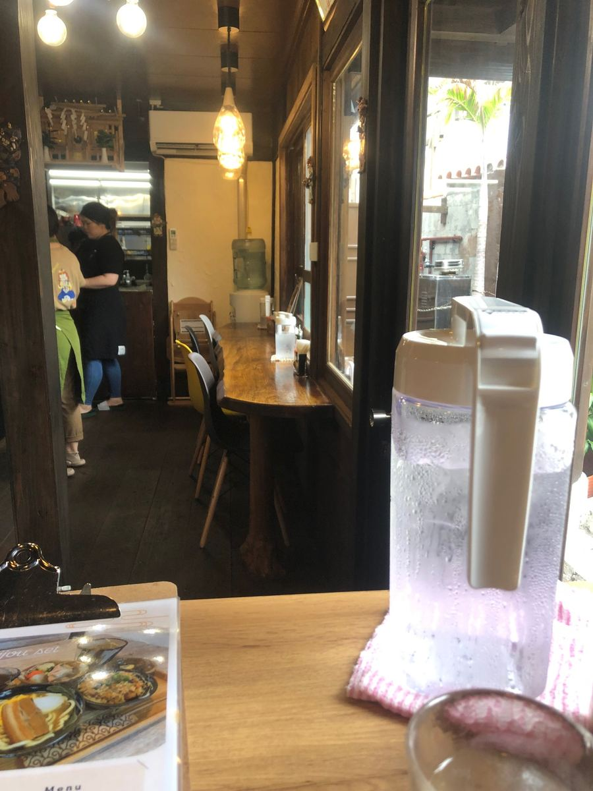
안으로 들어가면 외관의 고민가 분위기와는 완전히 달리, 가게 안은 새롭고 깔끔하게 개조되어 있고 카페 같은 차분한 공간이 펼쳐져 있어요😌 점심시간에 방문했는데 현지 손님들로 북적여서, 이건 인기 가게구나 싶었어요.
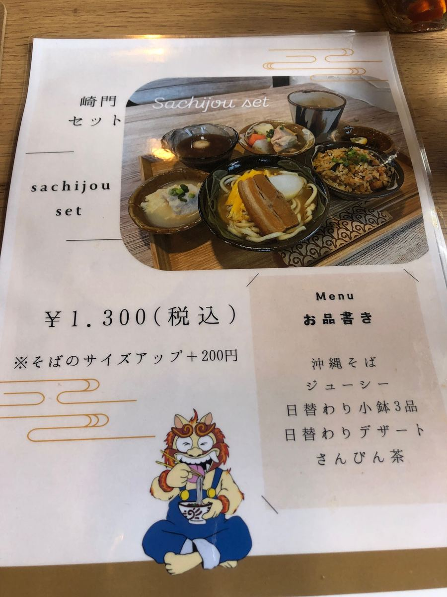
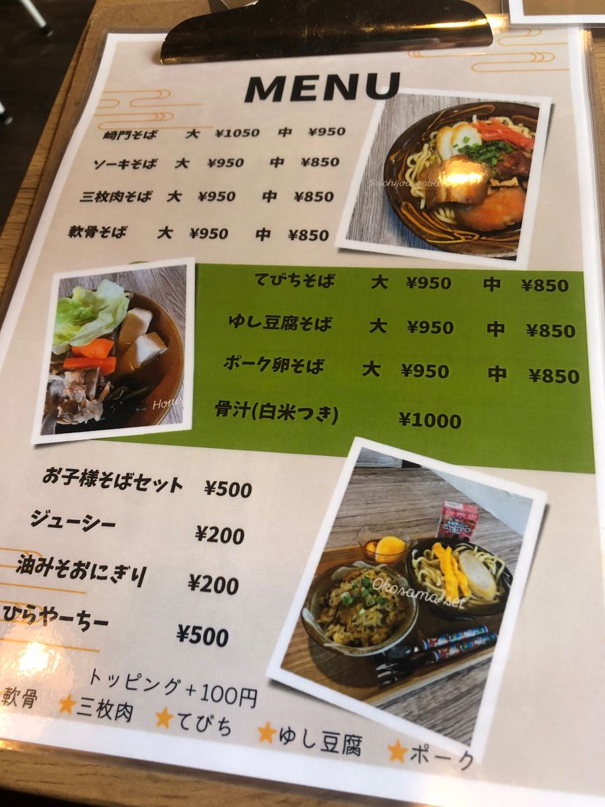
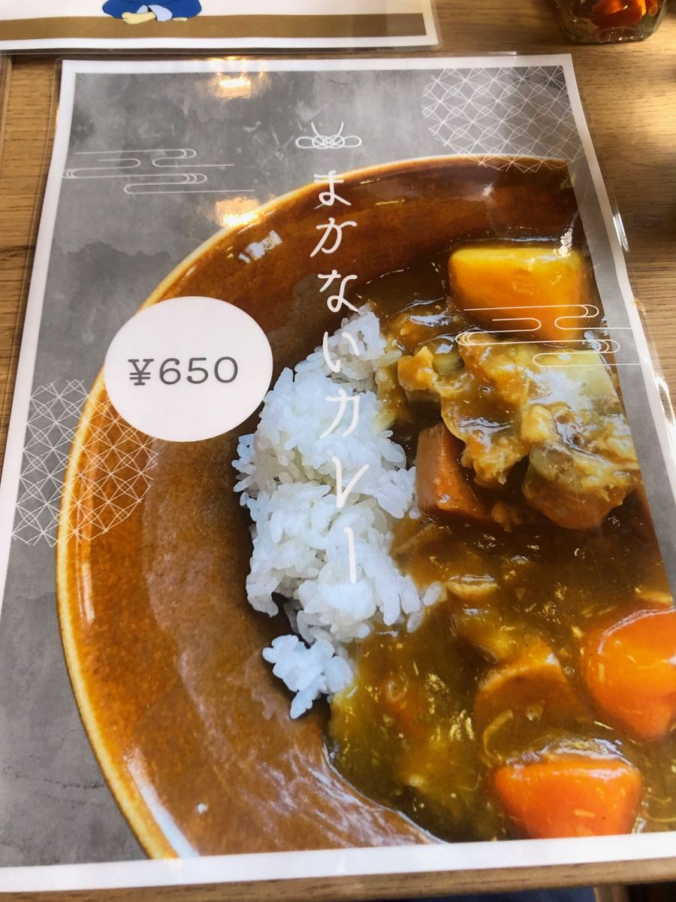
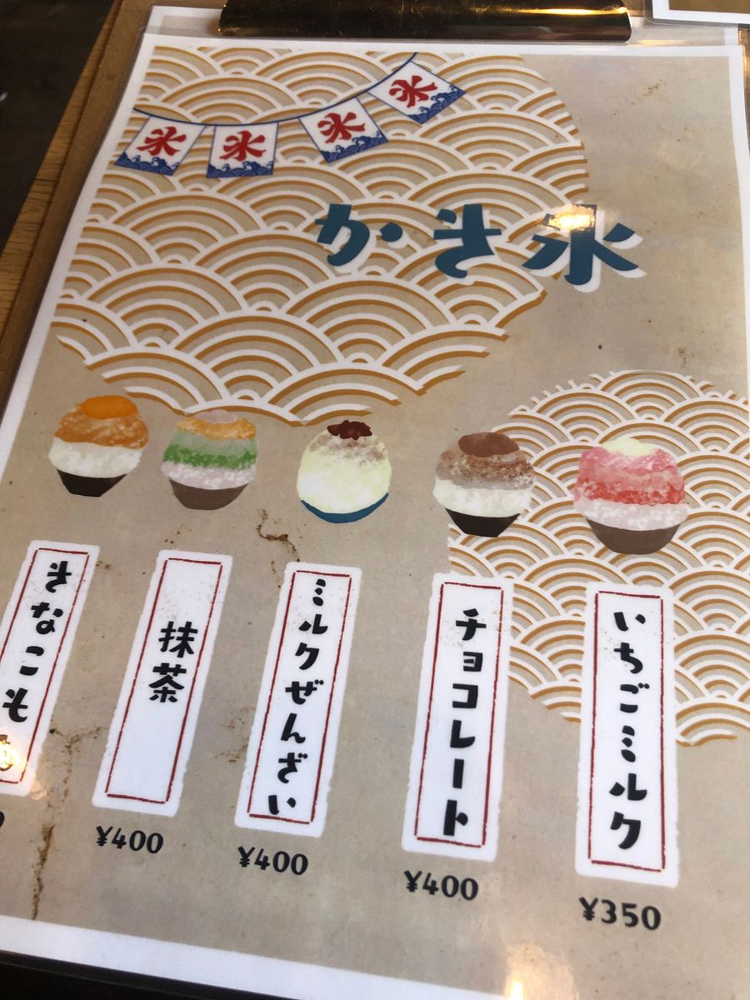
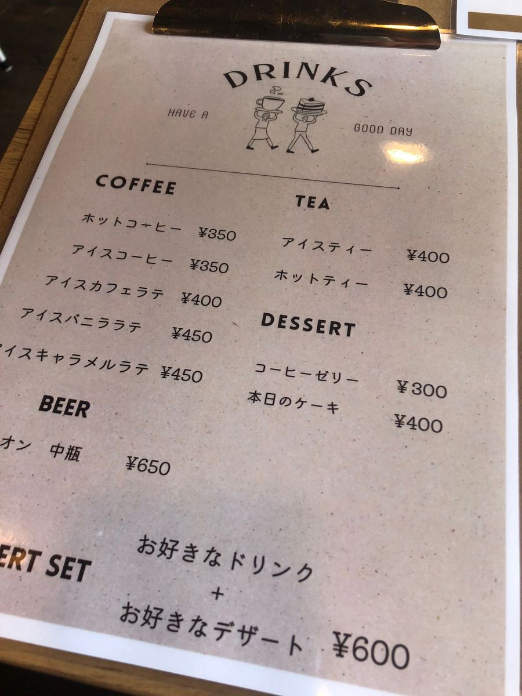
메뉴를 보고, 이번에는 가게 이름을 내건 “사치조 소바” 대를 주문하기로 했어요😋
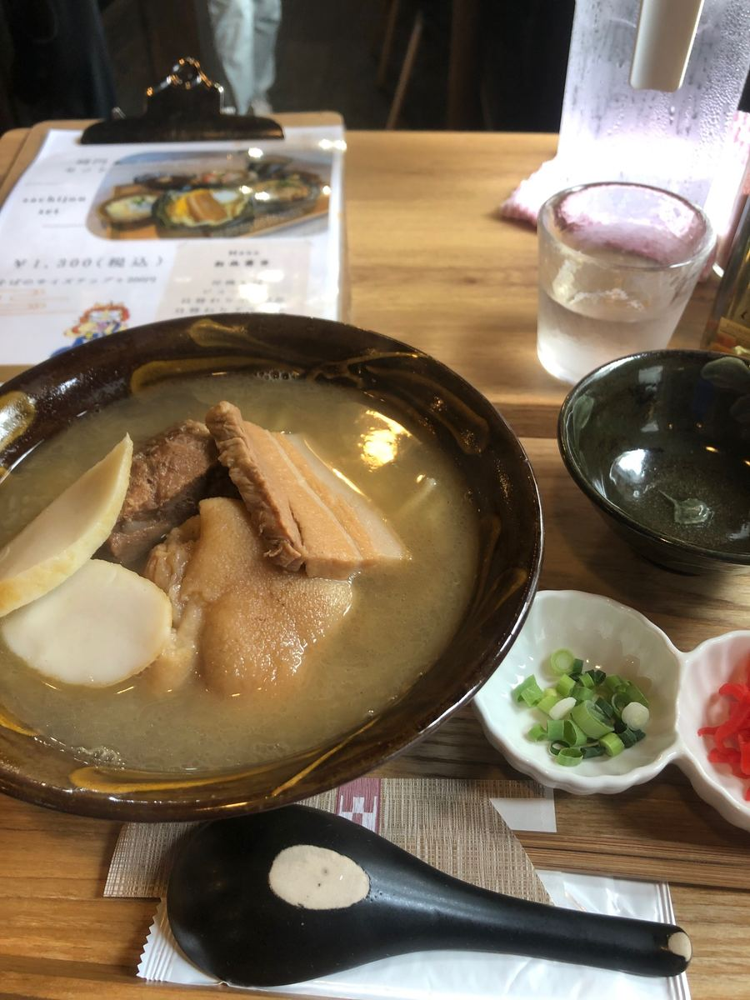
나왔습니다 “사치조 소바 대”! 우선 늘 하던 대로 국물부터 한 모금😊 정통 돼지뼈 육수가 잘 우러난 국물로, 그야말로 오키나와 소바라는 안심되는 맛이네요.
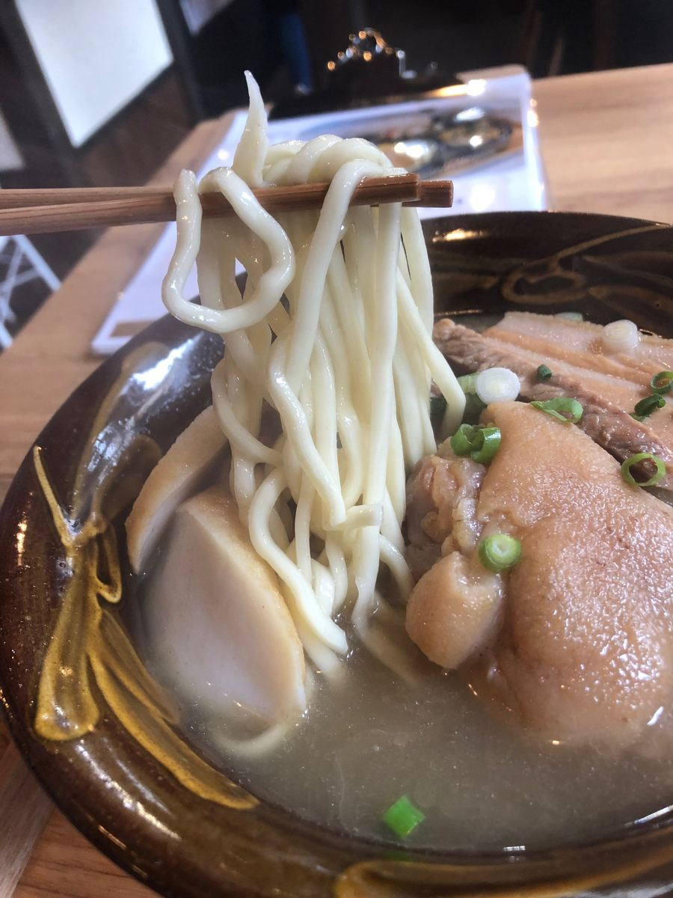
다음으로 면을 먹어 봅니다. 면은 중간 굵기의 둥근 면으로 부드러운 식감. 국물과 잘 어우러져 먹기 편해요🍜 고명은 어묵(가마보코), 돼지족(테비치), 뼈 있는 돼지갈비(혼소키), 삼겹살 조림(산마이니쿠)으로 푸짐합니다😆 고기는 적당히 간이 배어 있어서 꽤 좋은 느낌이에요. 다만 삼겹살 조림(산마이니쿠)과 뼈 있는 돼지갈비(혼소키)는 약간 힘줄 같은 질긴 식감이 남은 부분도 있었어요.
평가(9점/15점): 맛은 “보통”이라는 느낌으로, 정통 오키나와 소바를 안심하고 즐길 수 있는 한 그릇이었어요😊 무엇보다 시멘트 기와 고민가를 멋스럽게 개조한 분위기가 근사해서, 현지 분들로 북적이는 것도 납득이 갑니다. 오키나와시 모로미자토 지역에 오실 때는 한번 들러 보시는 건 어떨까요?🍜
면: ★★★☆☆（3）
수프: ★★★☆☆（3）
토핑: ★★★☆☆（3）